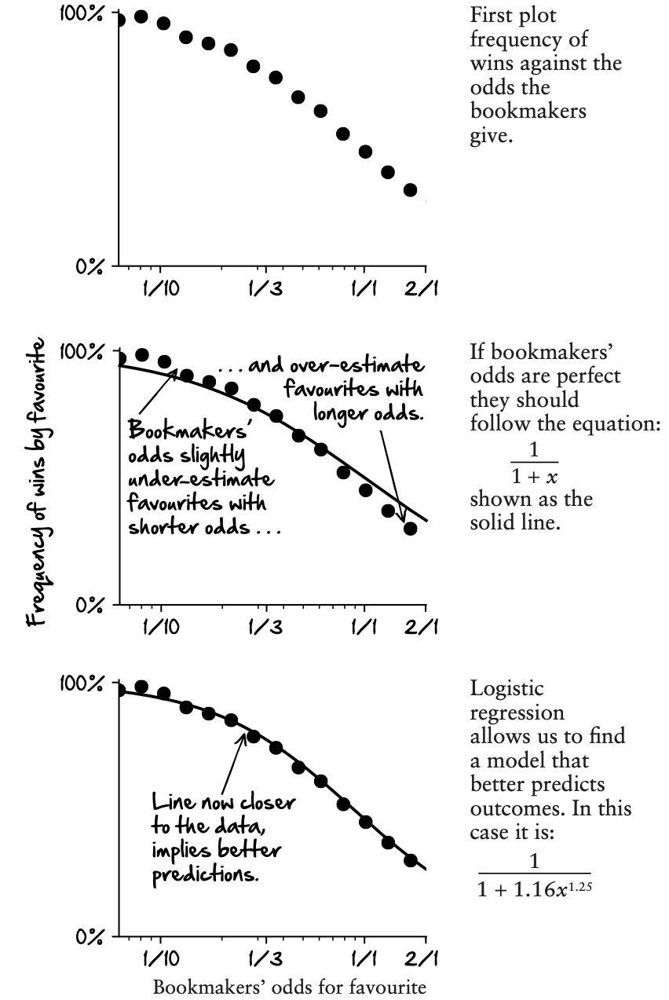

Odds and probabilities
Different ways of stating odds
In the UK, odds are stated as fractions, such as 3/2. This means that for every £2 you stake, you will win £3 if your bet comes off. In what follows, we use \(x\) to denote the bookmaker’s odds for the favourite to win. If you stake 1 pound you will win \(x\) pounds if your bet comes off.
For me, the UK odds make alot more sense than American odds. In Las Vegas they are stated as a number greater than or equal to 100, preceded by a + or a - to indicate whether the number is your profit or the amount you need to bet to win $100. To understand this, let’s look at some examples. If the UK odds are 2/1, then the US odds are +200: if you bet $100 and win, then your profit is $200. But when the odds (UK style) are less than one, the sign on the US switches from positive to negative. So, if the UK odds are 3/7, then the US odds are stated as -233. This signifies that in order to make a $100 profit on a successful bet, you’ll need to have bet $233.
Needless to say, we won’t be using US odds in what follows. They are not condusive to doing maths (which is possibly the reason they are the way they are…).
European odds are easier to deal with. They tell me how much I’ll get back if I win on a £1 bet. If the odds are 1.5, then after winning a £1 bet I’ll have £1.50. If I lose, I’ll not have my pound any more. Simple. For UK odds of 3/2, the European odds would be presented as 1 + 3/2 = 2.5. So if I bet £1, I will have £2.50 in total if my bet comes off. European odds are like interest rates: to calculate our potential profit, all we have to do is multiply by the odds. European odds equal one plus UK odds. In the data we use in the next section, the odds are given in European form, but unless otherwise stated, I will use UK odds.
A fair bet
You are offered odds of 3/2 for England winning against Denmark. If the probability that England win is 1 in 3, is this a good bet?
To answer this question we work out the expected payoff from our bet as follows.
The first term here is the probability that England win multiplied by the profit if they do win. The second term here is the probability that England don’t win multiplied by the loss if they don’t win. Taking the second term away from the first, gives the expected payoff of -1/3. No, this is not a good bet.
Try one of these calculations yourself: if the probability that England win is 1 in 2, is this a good bet?
(You should find that the expected payoff in this case is 1/2. It is a good bet)
A fair bet is when the expected payoff is zero, i.e. on average neither you or the bookmaker will make a profit. We can find this by solving
If the probability of England winning is greater than 2 in 5 the bet is in your favour. If it is less than 2 in 5 it is in the bookmakers favour. If the probability is 2 in 5 it is a fair bet.
In general, when the odds are \(x\), a fair one pound bet is found by solving.
When the bookmakers odds are fair, and they accurately predict the probability of a team winning, then we expect the above relationship to hold.
Finding an edge
The key to equation one, The Betting Equation, is finding instances where the bookmakers odds are wrong. The Betting Equation is
If \(\alpha=1\) and \(\beta=1\) then this equation is exactly the same as that given for fair odds. In this case, there is no way of beating the bookmaker (on the odds alone, in any case).
What we want to do (if we are going to beat the bookies) is find bets where either \(\alpha\) or \(\beta\) (or both of them) are different from one. This is illustrated below,
{kind=link}
In the next section we look at how to estimate \(\alpha\) or \(\beta\) from odds data for rhe World Cup using a method called logistic regression.